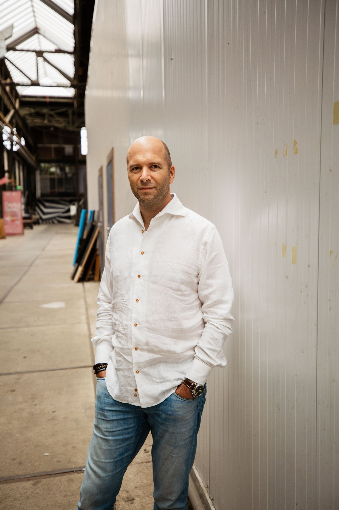

Founder story – Maarten Versteeg
DJ sinds 1993 · Communicatiespecialist sinds 2000 · Founder HEAR
OVER HEAR

Sinds 1993 draai ik als dj in bars, clubs, rooftopbars en beachclubs, en op corporate events van modeshow tot productlancering. Soms ook in het buitenland. Daardoor heb ik veel verschillende ruimtes en licht- en geluidssystemen leren kennen. Soms klinkt het geweldig. Soms hoor je wat er nog mogelijk is.
Daarnaast werk ik zo’n 25 jaar als communicatieadviseur voor grote organisaties. Ik weet dus ook wat er voor een opdrachtgever op het spel staat bij een merkactivatie, een productlancering of een personeelsevent.

Uit die combinatie is HEAR ontstaan. Ik begin bij wat een klant, bureau of artiest voor ogen heeft en zoek daar het geluid en het licht bij. Mijn gehoor en gevoel als dj helpen me om te horen wat een ruimte nodig heeft. Mijn werk als adviseur helpt me om te begrijpen wat de opdrachtgever wil bereiken.
Social media hebben invloed op muziek en het dj-vak. Events worden groter en soms lijkt de show belangrijker dan de artiest. Bij HEAR zijn licht en geluid dienend aan de artiest, met kleurrijke en creatieve lichtshows die de muziek volgen en een warme sfeer neerzetten.
Dat realiseer ik bij kleine tot middelgrote events, van 100 tot 1.500 personen, in venues tot 40 meter diep. Ik werk daarbij samen met een netwerk van ervaren freelance professionals.
Daarnaast help ik venue-eigenaren hun ruimte om te bouwen tot een dansvloer voor een eenmalig event. Of ik adviseer hen hoe zij zelf hun eigen licht en geluid kunnen realiseren: wat heeft de ruimte nodig, wat is er mogelijk en hoe zorg je dat het goed werkt, weinig onderhoud vraagt en lang meegaat?
De naam HEAR heeft twee betekenissen. Enerzijds staat het voor High End Audio Rental. Ik werk met merken waarvan de makers passie hebben voor hun vak. Zoals bij een goed Italiaans maatpak: het hoeft geen aandacht te trekken, maar de kenner ziet de snit, materialen en afwerking.
Ik probeer continu nieuwe merken en producten uit. Ik vind het heel leuk om nauwe relaties op te bouwen met Europese licht- en geluidsfabrikanten en samen te werken met professionals uit het vak. Daar leer ik veel van. Het maakt je ook bescheiden: hoe meer je leert van echte vakidioten, hoe meer je merkt wat je nog niet weet.
Daarnaast staat HEAR voor ‘kiezen op gehoor’. Een rider-friendly assortiment is commercieel gezien natuurlijk belangrijk, maar eigen smaak ook. Daarin ben ik een tikje eigenwijs. Wat bij HEAR in de flightcase gaat, moet passen bij de artiest en de avond. Het moet iets zijn waar ik zelf met overtuiging achter sta, ontwikkeld met vakmanschap, respect voor de cultuur en innovatie.
Eigenaar HEAR
Eigenaar Maarten Versteeg Communicatieadvies
maarten@hear.nl